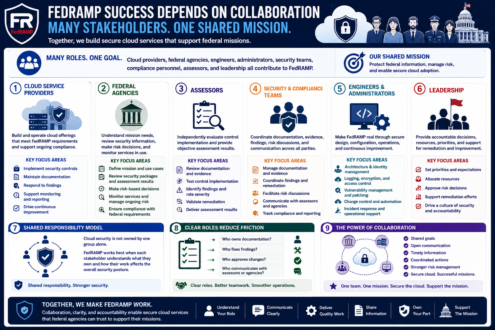

What Is FedRAMP?
Roles and Responsibilities
Connecting to LMS... Progress: in progress
Version 1.0 | Date: 2026-06-16 | Educational overview of FedRAMP concepts.

Narration
FedRAMP success depends on collaboration among many stakeholders. Cloud providers, federal agencies, engineers, administrators, security teams, compliance personnel, assessors, and leadership all contribute to the program.
Cloud service providers are responsible for building and operating cloud offerings, implementing controls, maintaining documentation, responding to findings, and supporting ongoing monitoring activities.
Federal agencies are responsible for understanding their mission needs, reviewing available security information, making risk decisions for their own use cases, and monitoring the services they rely on.
Assessors evaluate control implementation and provide assessment results. Security and compliance teams coordinate documentation, evidence, findings, risk discussions, and communication across stakeholders.
Engineers and administrators make FedRAMP real through architecture, identity management, logging, encryption, vulnerability management, change control, automation, incident response, and operational support.
Leadership matters because authorization and risk management require accountable decisions. Leaders provide priorities, resources, expectations, and support for remediation and continuous improvement.
The shared responsibility model is important because cloud security is not owned by one group alone. FedRAMP works best when each stakeholder understands what they own and how their work affects the security posture.
Clear roles also reduce friction. When teams know who owns documentation, who fixes findings, who approves changes, and who communicates with assessors or agencies, the program becomes easier to operate.